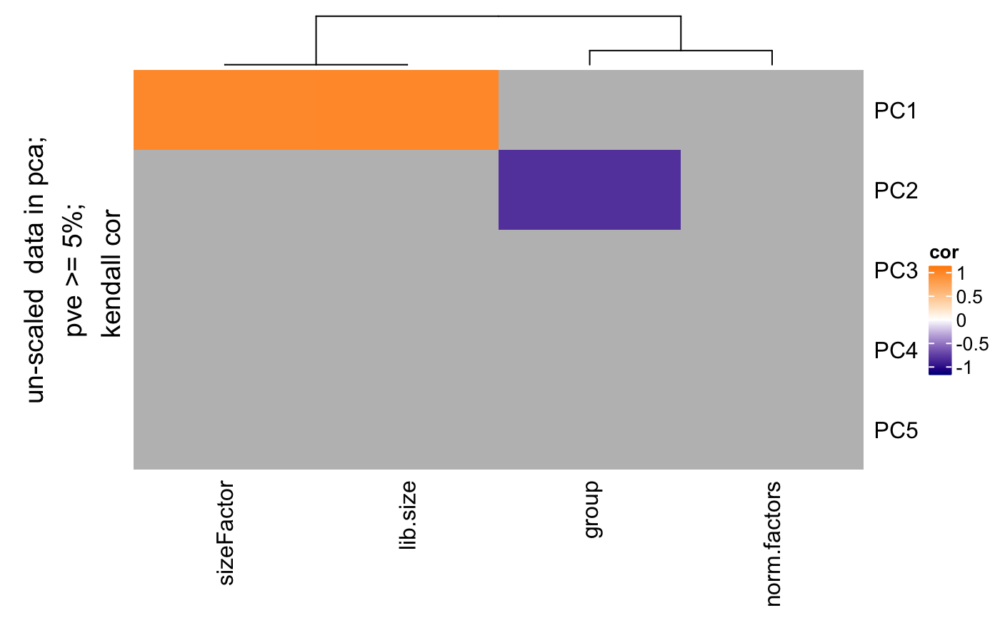
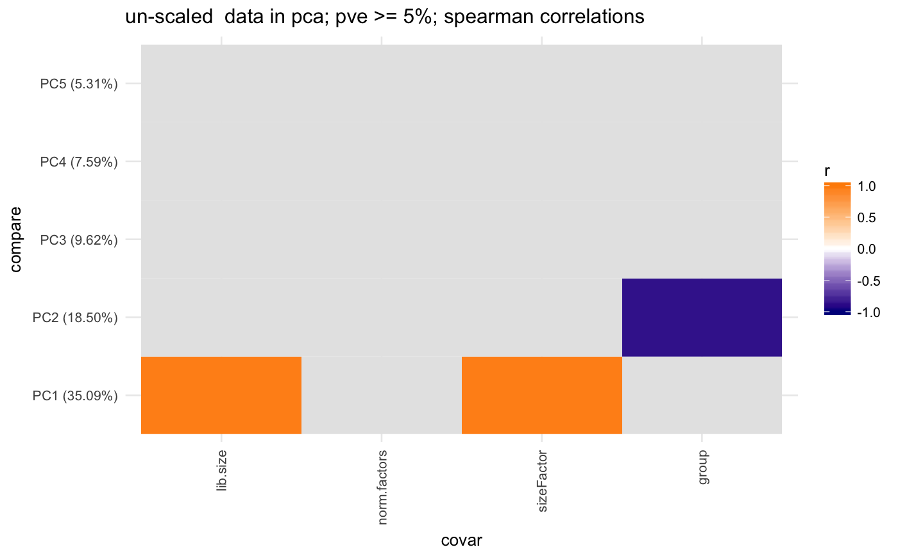

Find correlation between pcs and covariates
degCovariates.RdThis function will calculate the pcs using prcomp function, and correlate categorical and numerical variables from metadata. The size of the dots indicates the importance of the metadata, for instance, when the range of the values is pretty small (from 0.001 to 0.002 in ribosimal content), the correlation results is not important. If black stroke lines are shown, the correlation analysis has a FDR < 0.05 for that variable and PC. Only significant variables according the linear model are colored. See details to know how this is calculated.
degCovariates(counts, metadata, fdr = 0.1, scale = FALSE, minPC = 5, correlation = "kendall", addCovDen = TRUE, legacy = FALSE, smart = TRUE, method = "lm", plot = TRUE)
Arguments
| counts | normalized counts matrix |
|---|---|
| metadata | data.frame with samples metadata. |
| fdr | numeric value to use as cutoff to determine the minimum fdr to consider significant correlations between pcs and covariates. |
| scale | boolean to determine wether counts matrix should be scaled for pca. default FALSE. |
| minPC | numeric value that will be used as cutoff to select only pcs that explain more variability than this. |
| correlation | character determining the method for the correlation between pcs and covariates. |
| addCovDen | boolean. Whether to add the covariates
dendograme to the plot to see covariates relationship.
It will show |
| legacy | boolean. Whether to plot the legacy version. |
| smart | boolean. Whether to avoid normalization of the
numeric covariates when calculating importance. This is not
used if |
| method | character. Whether to use |
| plot | Whether to plot or not the correlation matrix. |
Value
: list:
plot, heatmap showing the signifcance of the variables.
corMatrix, correlation, p-value, FDR values for each covariate and PCA pais
pcsMatrix: PCs loading for each sample
scatterPlot: plot for each significant covariate and the PC values.
significants: contains the significant covariates using a linear model to predict the coefficient of covariates that have some color in the plot. All the significant covariates from the liner model analysis are returned.
Details
This method is adapeted from Daily et al 2017 article.
Principal components from PCA analysis are correlated with
covariates metadata. Factors are transformed to numeric variables.
Correlation is measured by cor.test function with Kendall method
by default.
The size of the dot, or importance, indicates the importance of
the covariate based on the range of the values. Covariates
where the range is very small (like a
varies between 0.001 to 0.002) will have a very small size (0.1*max_size).
The maximum value is set to 5 units.
To get to importance, each covariate is normalized using this
equation: 1 - min(v/max(v)),
and the minimum and maximum values are set to
0.01 and 1 respectively. For instance, 0.5 would mean there is at least
50
Categorical variables are plot using the maximum size always, since
it is not possible to estimate the variability. By default, it
won't do v/max(v) if the values are already between 0-1 or
0-100 (already normalized values as rates and percentages).
If you want to ignore the importance, use legacy = TRUE.
Finally, a linear model is used to calculate the significance
of the covariates effect on the PCs. For that, this function
uses lm to regress the data and uses the p-value calculated by
each variable in the model to define significance (pvalue < 0.05).
lm or lasso can be used here.
References
Daily, K. et al. Molecular, phenotypic, and sample-associated data to describe pluripotent stem cell lines and derivatives. Sci Data 4, 170030 (2017).
Examples
data(humanGender) library(DESeq2) idx <- c(1:10, 75:85) dse <- DESeqDataSetFromMatrix(assays(humanGender)[[1]][1:1000, idx], colData(humanGender)[idx,], design=~group) res <- degCovariates(log2(counts(dse)+0.5), colData(dse))#> #> #> #> #>#> #> #> #> #>res$plotres$scatterPlot[[1]]